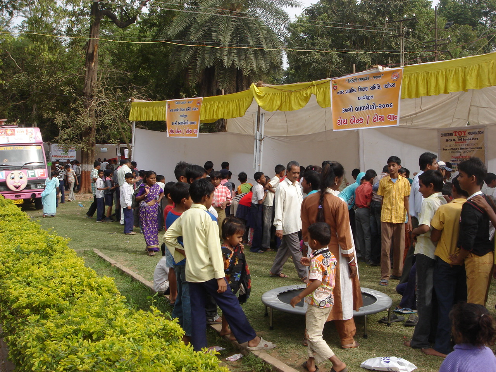
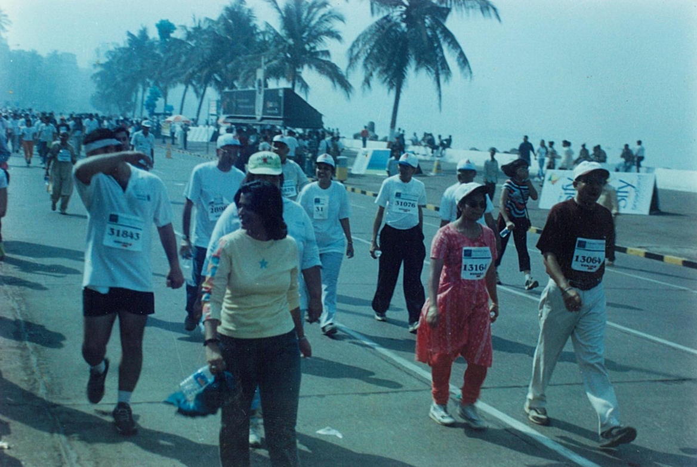
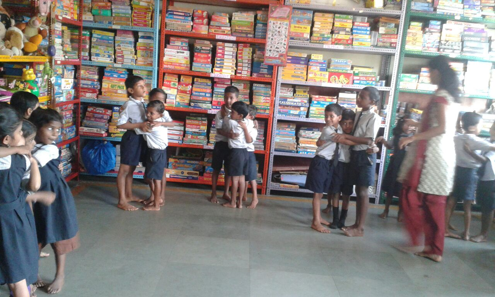
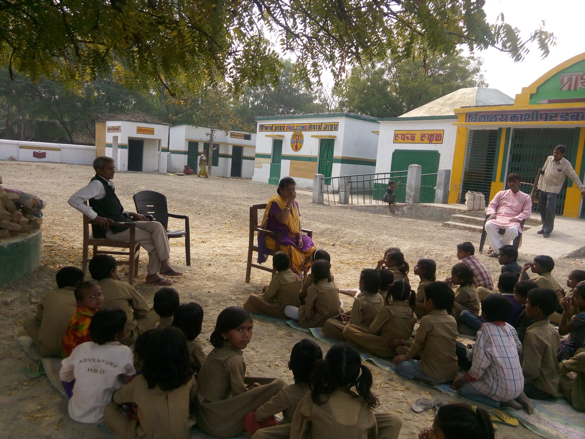
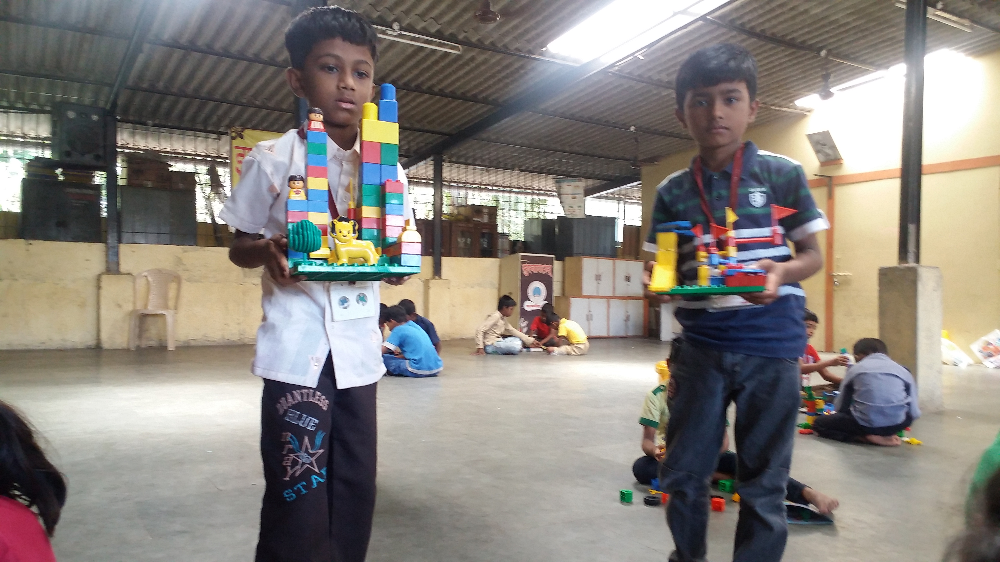
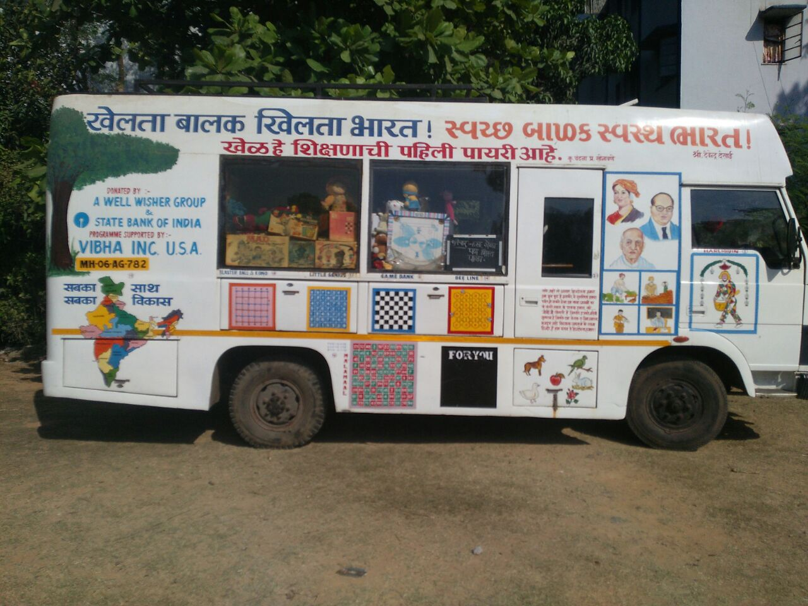
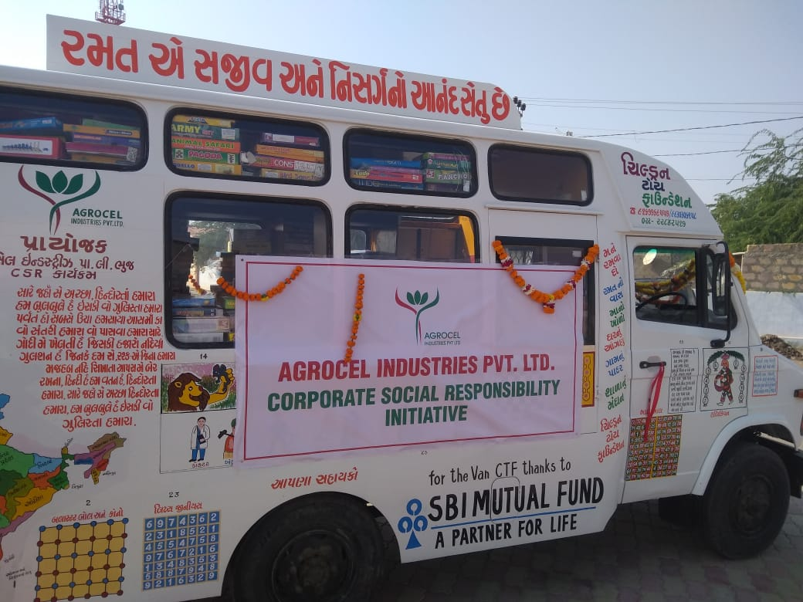

-

Balmela
Balmela is like a fun fair where special stalls are kept for games we have participated in three Balmela at Baroda courtesy Nagar Prathmik Samithi at Baroda. Difference is that we emphasize on playing of mind games, IQ games and Fun games. In a day more than 3000+ children and adults participated. We arranged a big Balmela as our fundraising event in 1993 at Mumbai when for 5 days thousands of children and adults participating We are looking for such events for fund raising with the help of good sponsorship

On the spot game contest
Children love nothing better than doing something on their own. There is nothing more fulfilling than moving forwards at one’s own initiative a drive. On the spot Games Contest is aimed at testing the skill, grasping power, instant judging and planning capacity of the young participants. The Contest, a distinguishing feature of the CHILDREN TOY FOUNDATION, has caught the imagination of people, both children and adults alike.
The idea behind the contest is to generate the maximum amount of joy among the largest number of children ( Which includes those who are children at heart ).As an experiment, it has never failed to give a foretaste of the wonder world of toys/ games, which is normally beyond the reach of the middle and poor class of children. As the means to an end, the contest has invariably proved to be the forerunner of a fresh string of libraries / play centres which people were provoked to set up following the whetting of appetite at the contest.
The games to be played are not declared in advance. They are taught when the contest begins. Element of secrecy and surprise adds flavour to the proceedings, making the actual contest a delight to watch.And the effort has always proved to be more than worth if, both in terms of intellectual delight and competitive laurels. We arrange interschool, inter collage and family contest every year

World Play Day
The World play day Created by the International Toy Libraries association (ITLA) it is a day to celebrate every child across the world’s right to play. It’s celebrated on each 28th May In Freda Kim’s words, founder of World Play Day (WPD), “the reason for promoting a World Play Day is to emphasize the importance of play in all our lives and particularly in the lives of our children. Children learn to talk through play, they learn to make friends through play, they get exercise through play; they also acquire the basic skills for formal education such as concentration, imagination, self-expression and the retention of useful facts. Though for us each day is play day we arrange play for children, youth, adults and families We request one and all to join the world

Beyond games
Beyond games is a corporate contest for our fund raising. The idea is to see that we generate funds and encourage CSR companies to understand how our Khelvigyan project is beneficial to children and sponsor such project.
Goal: A liberal way to bond participants into a cohesive group, where they come together spend quality time (3-4 hours) playing 4-5 different Board & Mind Games.
Interest: It's the play way approach to enthuse individual participation, interpersonal relationships and cognitive thinking.
Action: It is an ideal connect platform for loyalty programs, customer meets, and inter-department meets and lead generation activity. We use family games like Chinese Checkers, Stacko, De code, Little Genius, Laxicon, Pattern Memory, Racko etc. Also Fun games are arranged for a change The games will be taught on the spot and it will taste grasping power and evaluation capacity.
Employee benefits:
Joy from the games tournament
Intellectual training of logic, strategy and memory skills
Team building with colleagues
Free access to CTF centers for employees and their families interested to become ambassadors of CTF
CSR benefits
Companies contribution towards under privileged education programme
You will ensure the joy from learning for these kids
Provide opportunities for children to play with development games which will enable them to develop their skills in logic, strategy, English, math and language.
Marathons
This is also our Fund raising event. We participated in all Standard Chartered Mumbai Marathons and now we participate in Tata Mumbai Marathon courtesy Procam International & United Way of Mumbai.
We wish that corporate support us in a big way for us to establish libraies in villages where children do not have access to educational and mind games We also arranged Moutain in the City Marathon courtesy Mr. Anudip Samui and his Violat team.
We wish that sponsors come forward for our Marathon for different groups -

Play Centers
While setting up a toy / game library entails a fairly substantial investment, play centres which let children play, but not carry home a toy or game, are immensely suitable in the case of civic schools which suffer from chronic funds crunch. So the FOUNDATION intends carrying out a campaign which would convince the Government to set up at least a play centre if not a library in every municipal/Zila Parishad and Government schools all over the country.
How to setup a Toy / Game Library?
Anybody can set up a library, provided the basic conviction is there. Following is the game plan for a modest library, to suit the Indian conditions :
Area: 200/250 sq.ft. If a hall and ground are attached it would be most ideal since that would facilitate holding of competitions and similar other events.
Investment:
Toys Rs. 50,000
Games Rs. 40,000
Furniture Rs. 15,000
Stationery & other accessories Rs. 5,000
Total Rs. 1,10,000
How does the Foundation help ?
The Foundation helps those aspiring to set up a toy/ game library by guiding them from the moment of conception to the moment of delivery . To begin with, it advises on what to buy and where to buy and why to buy. It acts as a go between the manufacturer and buyer of toys / games, ensuring the best bargain value for money. Then it provides the necessary training to a core group of volunteers on how to run the library in a professional fashion. Wherever possible , it helps out in repairing and replacing damaged toys and raising funds from individual philanthropists, charitable trusts, social welfare organizations, etc, so that the library is on a sound footing.
-

Toy Van
Earlier in 1996-97 CTF used to arrange play sessions in evening for street children around its office at Fort. Everyday around 30-40 children from the surrounding used to play. Prompted by this overwhelming response and in its quest to reach out to more children at distant places, an idea of developing a mobile service just occurred and today it’s a big thing. The van was named as LAFF van (Let’s All have Fun & Frolic). LAFF van has helped to propagate the toy library project in Northern states of India all the way up to Jammu and Kashmir. M/s Godrej Industries and many ‘Lions’ Clubs had sponsored the trip. The LAFF van had been in 162 villages of Latur District and an equal number off villages in Nashik district on sponsorship of Excel Industries Ltd.

The colorful vans easily lure the imagination of the children. On the body of the van there are many games painted and more than hundred children can play with magnetic counters in groups. The Van has lots of toys and games both educational and entertaining. The specially designed group game on the van is an open invitation for number of children to come together. The van has an in built video system for viewing educational video films and also for playing video games. Occasionally puppet and magic shows are performed to engage and entertain children. It has a projector for big screen viewing for more number of children and mike system for children to interact with each other with jokes,poems etc.
The first LAFF van stacked around 300 toys and other games along and hobby kits of stamps, coins, cards etc. This van was taken care by Excel Crop Care ltd at Banaras and served schools for farmers children in 20 villages. This van had also gone to Bahraich to server sugar industry workers children courtesy ECC Ltd & Parle group. Also it gave us access to many donors who were inspired to set up toy libraries at different places. Agrocel Industries Pvt Ltd is our new partner with whom we have made Agrocel Toy Express and serve 12 more schools, hospitals & NGOs. With our new partner Larsen & Toubro Ltd we have made Nanha Munna Express and serve 6 private schools. We run LAFF van in Mumbai donated by well wisher group & State bank Of India, Com. Br. And supported by Vibha Inc. U.S.A. Larsen & Toubro Ltd have created a new van – Kutty Chutty Bus at Chennai. Also as present we ran our LAFF van at U.P.
-
Event Calendar